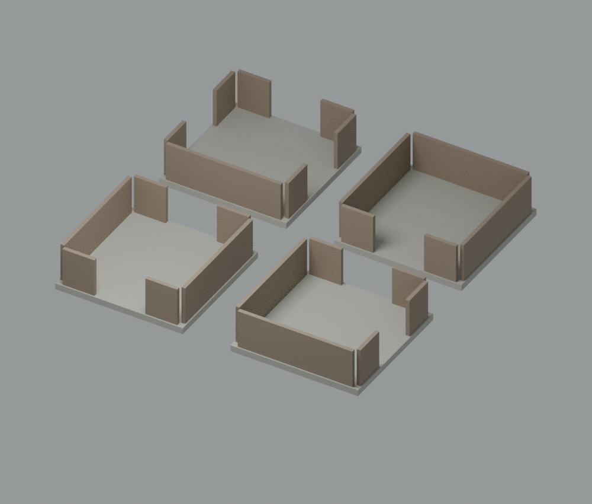

研究候选 · 已公开 · 未完成设计验收
通行接口试件 · WFC方法研究
REALTIME MODEL研究模型 · 非设计验收
 静态CPU参考 · 代表变体
静态CPU参考 · 代表变体进入详情后仅加载所选模型。拖动旋转、双指或滚轮缩放；方向键旋转，＋/－缩放，R复位，Esc关闭。
直、弯、T、端头四预设构成一个试件组；盒状地坪与挡板无顶通行试验，不是汉代廊房或建筑成品，不与住宅近景精度同级。

4×4设计米；局部格块中心地面原点。glTF X东/Y上/-Z北；单体GLB没有展示排布位移。
1.6米接口、0.2米地坪、2.2米净高预留均为C试验参数。限定轴对齐盒体检查不是结构/全碰撞/引擎验收。独立组合：20个局部解仅3个通过全局判定，17失败保留；非全参数保证，GPU/手机未验。
原件与接口
4种几何只计一个资产组。展示用blend将四件分开排布；每个GLB保持中心原点。下列接口是设计契约，尚未据此证明组合可通行。
- straight GLB · 11216 B ·
39767266011d616c7acbbacce4165fbf1f4dd696e7164e57f716945e9be28957 - elbow GLB · 11196 B ·
addf39f351b32764704e627b3bf0edbaefe6fc6e8e351d0944059e7e7f53b780 - tee GLB · 12648 B ·
5afd5a73a5eba42f7e3de580964bd4b1dce1efaf0f058b7c46cca2a484ebde6d - end GLB · 9712 B ·
c69cccc8a4033b8b9615cd0056cda92f2d08f7bf6abaca7d8588ff4aa8282b6d
独立组合方法
查看20seed完整成功/失败与3个真实几何组合。三组合仍属同一资产组，不新计作品；非同构只指图拓扑，内部接触面保留。
城市引用
未接入洛阳；不自动填城。组合规则试验另行验证。